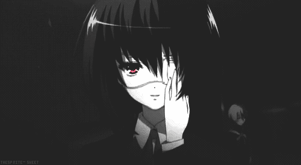
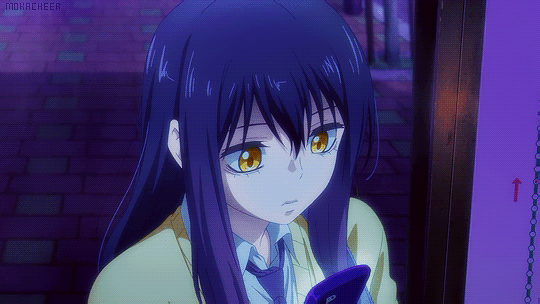

Another
Tudo começa com uma historia contada pelos alunos do Colégio Yomita: há 26 anos, havia um aluno chamado Misaki que, desde o primeiro ano, era uma pessoa querida por todos ao seu redor, bom aluno e ótimo atleta. Mas no terceiro ano ele caiu na turma 3-3 e perdeu a vida em um acidente.
Blood Lad
Conta a história de Charlie Staz, um vampiro que ao contrário de outros da sua espécie, prefere gastar seu tempo lendo mangás, jogando videogames e assistindo animes ao invés de ficar por aí bebendo o sangue das pessoas.

Boku Dake Ga Inai Machi
Conta a história de um adulto de 29 anos, Satoru Fujinuma, que sonha em ser mangaká, mas enquanto não realiza seu sonho trabalha como entregador de pizza. Satoru leva sua vida sem grande entusiasmo apesar de conseguir voltar no tempo por 1 ou 5 minutos, normalmente para evitar que algo ruim aconteça.

Deadman Wonderland
É uma história de sobrevivência dentro da prisão. O protagonista, Igarashi Ganta, tinha uma vida normal, até que um certo dia seus colegas de classe são assassinados e ele se torna o principal suspeito do crime que não cometeu.

Gabriel Dropout
A história é uma comédia que desenrola-se em torno de Gabriel White, que se formou no topo da classe na escola de anjos e que frequenta uma escola humana na terra em busca de conhecimento, mas, um jogo web atrai toda a sua atenção e acaba decidindo que dá muito trabalho ir para outros lugares.

Jibaku Shounen Hanako Kun
Acompanha a história de uma garota que almeja realizar um desejo, mas para isso ela terá que oferecer algo em troca. Inicialmente é isto que precisamos ter em mente, pois os desdobramentos subsequentes baseiam-se nesta premissa. Hanako-kun é um fantasma que mora no banheiro de um colégio.

Yofukashi No Uta
Na história, acompanhamos Ko Yamori, uma garoto que está desiludido da vida escolar que um adolescente de 14 anos como ele normalmente tem. Evitando ir para a escola, o garoto inverte o dia pela noite, depois de sair de fininho de casa um dia de madrugada e perceber que a noite pode ser interessante.

Mirai Nikki
A história acompanha Yukiteru, um garoto de 14 anos que poderia ser considerado estranho. Com dificuldade para fazer amigos, para ele a vida não passa de um grande reality show, onde ele é mais um espectador. Tudo que ele vê, resolve anotar em seu celular, fazendo dele seu diário.
Assistir a Continuação (1 episódio só)

Mikakunin De Shinkoukei
A história é sobre Yonomi Kobeni, uma garota comum, descobre em seu 16º aniversário que ela noivada com Mitsumine Hakuya, um garoto da mesma idade que ela. Hakuya se muda do interior para começar a viver com ela, trazendo com ele sua irmã mais nova que ainda é uma estudante do primário.

Mieruko-chan
A história é sobre Miko Yotsuya, uma típica estudante de ensino médio que repentinamente adquire a infeliz habilidade de ver espíritos e fantasmas horríveis que a assombram bem como às pessoas ao seu redor. Apesar disso, Miko faz o possível para ignorar a existência dos fantasmas e tenta levar uma vida
